Categorical data ko visual aur actionable insights me badalna: Rows ki frequency ginne se lekar multi-category aggregated metrics, statistical estimators, aur error bars ki complete practical guide in natural Hinglish.
Data Science aur Machine Learning me hamara samna do mukhya tarah ke data se hota hai: Continuous Numerical Variables (jaise student marks, salary, latency, price) aur Categorical Variables (jaise course names, shipping partners, user devices, departments, ticket types).
Previous topics (Topics 5 se 8) me humne numerical variables ke distribution ko samajhne ke liye Histograms, KDE plots, Box plots, aur Violin plots dekhe the. Lekin jab business stakeholders aapse puchte hain:
Ye do alag sawal hain, aur in dono sawalon ke jawab ke liye Seaborn ne do dedicated aur powerful visual functions banaye hain: sns.countplot() aur sns.barplot().
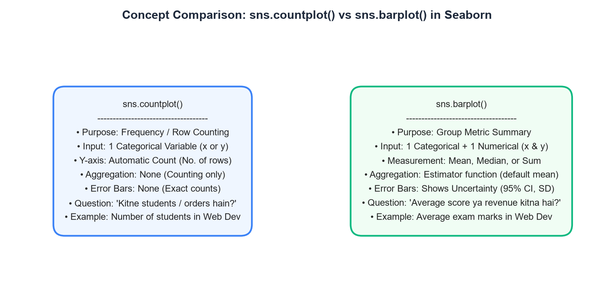
Agar aapko dataset ki rows ko ginna (Count karna) hai ki kis category me kitne observations hain, to sns.countplot() use kijiye. Agar aapko kisi numerical column ka Average, Median ya Sum compare karna hai across categories, to sns.barplot() use kijiye.
sns.barplot()) Deep Dive & Core MechanismSeaborn me sns.barplot() ek bivariate (ya multi-variate) categorical plot hai. Iska kaam sirf bar khadi karna nahi hota, balki ye background me teen vital computational steps perform karta hai:
x) ke basis par groups me split karta hai.y) par ek statistical summary function (default np.mean) run karta hai. Bar ki height ye calculated metric represent karti hai.import seaborn as sns
import matplotlib.pyplot as plt
import pandas as pd
# Load College Enrollment & Exam Performance Dataset
df = pd.read_csv("scratch/seaborn_topic9_data/college_enrollment_marks.csv")
# Create Bar Plot: Average marks across courses
plt.figure(figsize=(8, 5))
sns.barplot(
data=df,
x="course",
y="exam_marks",
palette="crest",
errorbar=("ci", 95),
capsize=0.1
)
plt.title("Average Exam Marks by Course (sns.barplot)")
plt.xlabel("Course Domain")
plt.ylabel("Mean Exam Marks (±95% CI)")
plt.ylim(0, 100)
plt.tight_layout()
plt.show()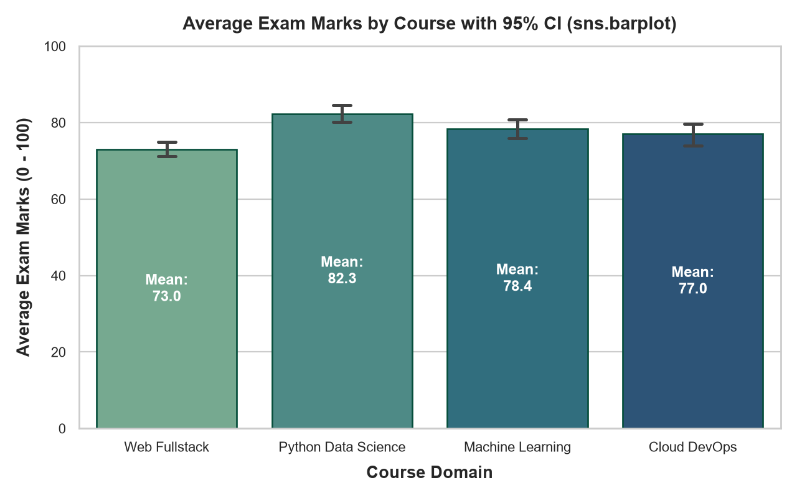
Is figure me har bar ka top point us course ka mean exam score darshata hai, aur upar lagi hui black vertical line 95% Confidence Interval represent karti hai. Ye confirm karta hai ki random sampling variation ke bawajood Python Data Science ke students ka average score sabse high hai.
sns.countplot()) Deep Dive & Frequency Countingsns.countplot() ko aap ek "Categorical Histogram" samajh sakte hain. Jaise histogram continuous numbers ke bins me frequencies count karta hai, waise hi countplot discrete categories ke total occurrences (rows) ko count karta hai.
Isme aapko sirf ek hi categorical variable provide karna hota hai (x="course" ya horizontal ke liye y="course"). Seaborn background me len() count execute karta hai aur har category ke liye bar ki height draw karta hai.
import seaborn as sns
import matplotlib.pyplot as plt
import pandas as pd
df = pd.read_csv("scratch/seaborn_topic9_data/college_enrollment_marks.csv")
# Create Count Plot: Number of enrolled students per course
plt.figure(figsize=(8, 5))
order_courses = ["Web Fullstack", "Python Data Science", "Machine Learning", "Cloud DevOps"]
palette_courses = ["#3B82F6", "#60A5FA", "#93C5FD", "#BFDBFE"]
sns.countplot(
data=df,
x="course",
order=order_courses,
palette=palette_courses
)
plt.title("Student Enrollment Count by Course (sns.countplot)")
plt.xlabel("Course Domain")
plt.ylabel("Number of Students (Row Count)")
plt.ylim(0, 62)
plt.tight_layout()
plt.show()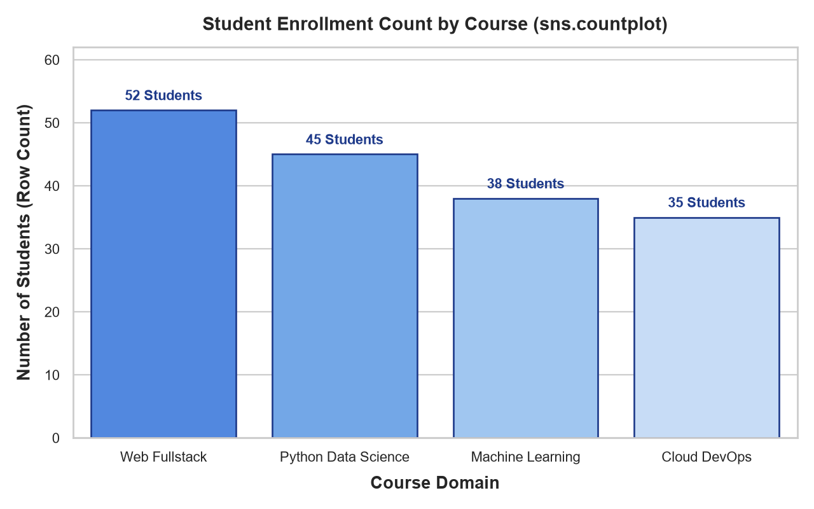
Count plot me kabhi koi error bar nahi hota kyunki rows ko count karna ek deterministic process hai — isme sample mean ki tarah statistical uncertainty nahi hoti.
Hamare 600 orders ke e-commerce dataset me product categories ki order frequency dekhte hain:
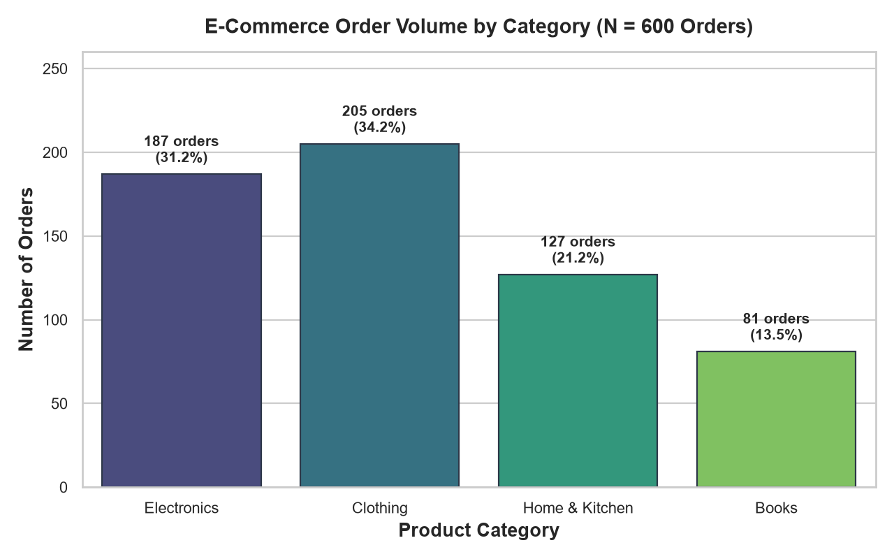
Data Science beginners aksar ek bohot badi galti karte hain: wo sochte hain ki "Dono me bar hi to banti hai, to koi bhi function use kar lo!" Lekin in dono ke core purpose aur computational logic me zameen-aasman ka antar hota hai.
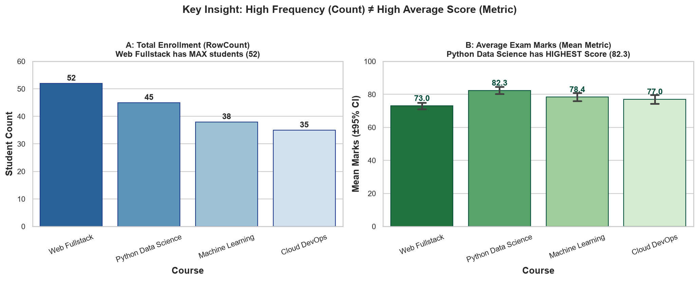
| Feature / Parameter | sns.countplot() |
sns.barplot() |
|---|---|---|
| Primary Purpose | Category frequency / observation count ginna | Group-level summary metric (Mean/Median/Sum) compare karna |
| Required Inputs | Sirf 1 variable (ya to x ya to y) |
2 variables (1 Categorical + 1 Numerical) |
| Measurement Axis | Hamesha Count (Automatic row frequency) | Continuous value (e.g. Marks, Price, Latency, Salary) |
| Statistical Estimator | Koi estimator nahi (Sirf simple row tallying) | Estimator function (Default: np.mean, ya np.median) |
| Statistical Error Bars | Kabhi nahi (Count exact hoti hai) | Hoti hai (Default 95% Confidence Interval) |
| Underlying Question | "Ye cheez kitni baar hui?" | "Inka average / total kitna hai?" |
| Common Bug | y="marks" pass karna → Crash/Error! |
Numeric column na dena → Incorrect output |
Agar aap likhenge sns.countplot(data=df, x="course", y="exam_marks"), to Seaborn ek immediate ValueError: Cannot pass values for both `x` and `y` to `countplot` throw karega. Count plot me measurement axis Seaborn khud generate karta hai.
sns.barplot() Essential Parameters & Core CustomizationSeaborn 0.13+ me sns.barplot() developers ko bar aesthetics aur statistical computation par granular control deta hai. Aayiye iske sabse mahatvapurna parameters ko deeply samjhein:
| Parameter | Allowed Types & Values | Practical Significance in Production |
|---|---|---|
data |
pd.DataFrame |
Tidy format dataset jisme categorical aur numerical columns maujood hon. |
x, y |
Column names (strings) | Ek categorical variable aur ek numerical variable. Swap karne par orientation change hoti hai. |
order |
List of category strings | Bars ka display sequence decide karta hai (e.g. high-to-low ranking). |
estimator |
Callable (np.mean, np.median, np.sum) |
Har category group ke numerical values ko aggregate karne ka statistical function. |
errorbar |
('ci', 95), 'sd', 'se', None |
Seaborn 0.13+ syntax: Bar ke upar uncertainty whiskers ki calculation method. |
capsize |
Float (e.g. 0.1 to 0.2) |
Error bar whiskers ke end par horizontal caps ki width set karta hai. |
width |
Float (e.g. 0.6 to 0.8) |
Bars ki visual thickness adjust karta hai taaki bars ke beech balanced spacing rahe. |
palette / color |
Colormap name ya Hex color | Bars ke colors control karta hai. Single category ke liye uniform color best practice hai. |
Logistics operations me har delivery partner ki average delivery latency (in minutes) evaluate karna ek real-life dashboard use case hai:
import seaborn as sns
import matplotlib.pyplot as plt
import pandas as pd
df_deliv = pd.read_csv("scratch/seaborn_topic9_data/delivery_latency_outliers.csv")
plt.figure(figsize=(8, 5))
partner_order = ["UrbanExpress", "FastTrack", "HyperLogistics", "SpeedyDrop"]
sns.barplot(
data=df_deliv,
x="partner",
y="latency_minutes",
order=partner_order,
palette="rocket",
errorbar=("ci", 95),
capsize=0.12,
edgecolor="#4A0E4E",
linewidth=1.2
)
plt.title("Delivery Partners: Mean Latency with 95% Confidence Intervals")
plt.xlabel("Delivery Logistics Partner")
plt.ylabel("Mean Latency (Minutes)")
plt.ylim(0, 50)
plt.tight_layout()
plt.show()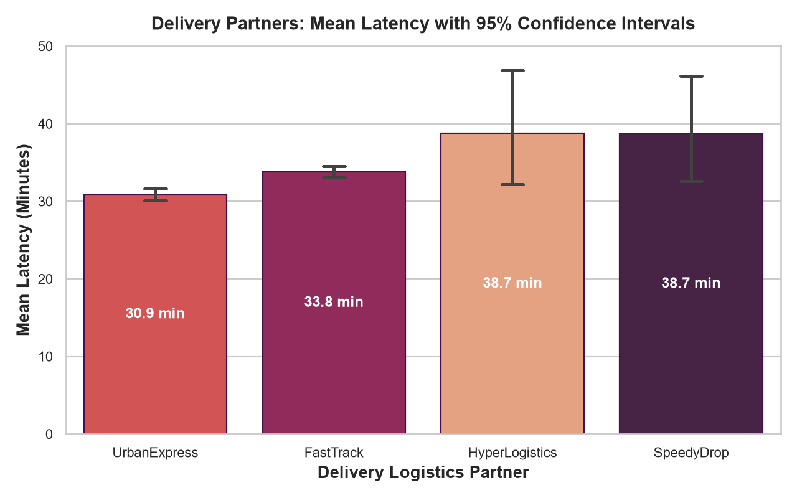
Enterprise reports me bars ki width aur color palette ko brand identity ke anusar customize kiya jata hai:
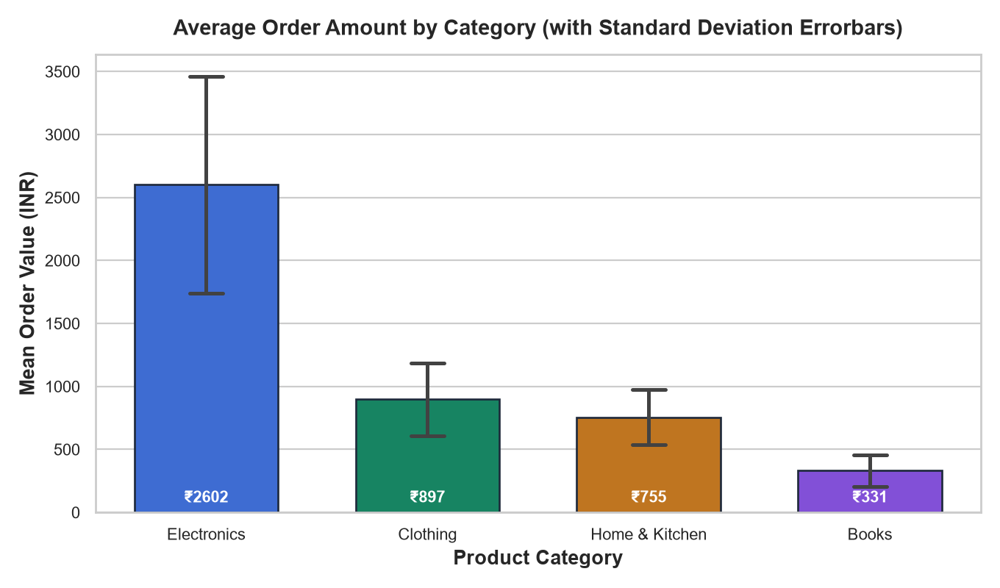
width=0.65 with curated enterprise hex palette and standard deviation (errorbar='sd') error bars.sns.countplot() Essential Parameters & Horizontal Bar OrientationJab aapke categorical labels lambe hote hain (jaise "Payment Gateway Transaction Failure", "Technical Account Recovery Bug"), to vertical bars me x-axis labels aapas me takrane lagte hain ya unhe 90-degree rotate karna padta hai, jisse readability bilkul kharab ho jati hai.
Agar aapke category names 8 characters se lambe hain ya 5 se zyada categories hain, to hamesha Horizontal Bar / Count Plot banayein. Seaborn me horizontal plot banana bohot aasan hai: sirf x ki jagah y="issue_type" pass kar dijiye!
import seaborn as sns
import matplotlib.pyplot as plt
import pandas as pd
df_tickets = pd.read_csv("scratch/seaborn_topic9_data/customer_support_tickets.csv")
plt.figure(figsize=(8.5, 5))
ticket_order = ["Delivery Delay", "Payment Failure", "Refund Request", "Account Access", "Technical Bug"]
# Horizontal countplot: y-axis takes the category column
sns.countplot(
data=df_tickets,
y="issue_type",
order=ticket_order,
palette="Blues_r",
edgecolor="#1E3A8A"
)
plt.title("Customer Support Tickets by Issue Type (Horizontal Layout)")
plt.xlabel("Ticket Volume (Row Count)")
plt.ylabel("Customer Support Category")
plt.xlim(0, 175)
plt.tight_layout()
plt.show()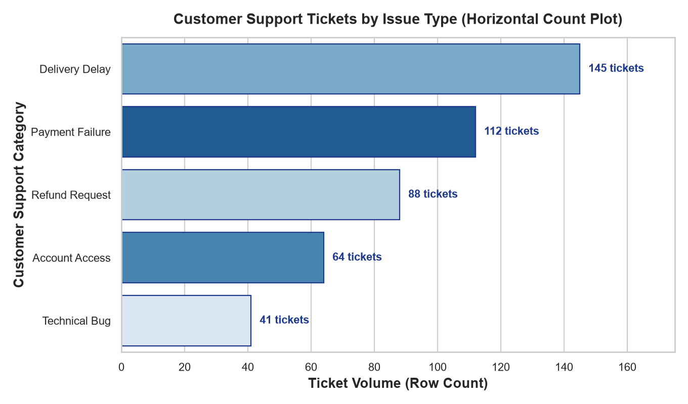
hueData visualization tab sabse zyada insightful banti hai jab hum ek sath do categorical variables ka interaction dekhte hain. Seaborn me iske liye hue parameter use hota hai.
Jab aap hue provide karte hain, to Seaborn primary categories ke andar sub-groups banata hai aur bars ko side-by-side (dodged) arrange karta hai. Seaborn 0.13+ me naya gap parameter introduce hua hai jo adjacent dodged bars ke beech thoda elegant breathing space create karta hai.
Dekhte hain ki College ke charo courses me Section A aur Section B ke students ka average score kaisa perform kar raha hai:
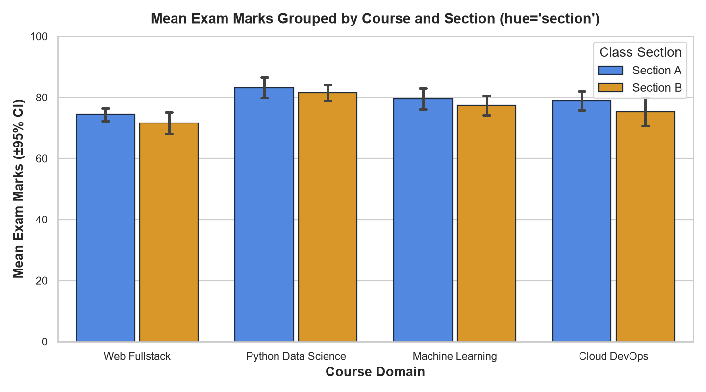
hue='section' — In every course domain, Section A achieves slightly higher average scores (e.g., Python Data Science Section A: 83.18 vs Section B: 81.49).Ab dekhte hain ki kis product category me orders Mobile, Desktop ya Tablet se aa rahe hain:
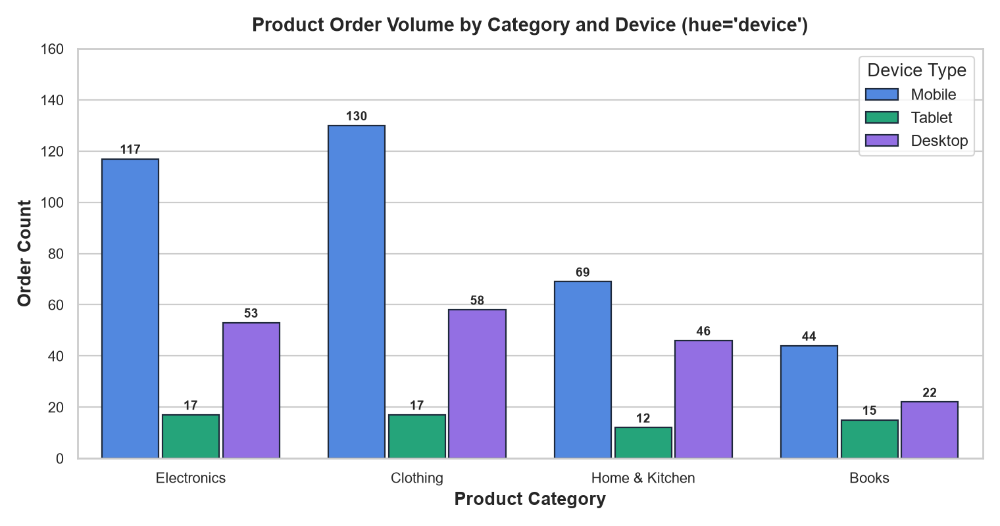
hue='device' — Mobile dominates transactions across all product types (e.g. Clothing Mobile: 130 orders vs Desktop: 58).Pehele Seaborn me dodged bars aapas me bilkul chipki hui aati thin. Seaborn 0.13+ me aap gap=0.08 pass kar sakte hain, jisse grouped bars ke beech premium modern UI padding ban jati hai!
By default, sns.barplot() arithmetic mean (average) calculate karta hai. Lekin real-world data science me data aksar heavily skewed hota hai ya usme extreme outliers hote hain.
Jab aapke data me extreme high values hoti hain (jaise VIP spenders ya extreme logistics delivery delays), to Mean bohot tezi se upar pull ho jata hai, jabki aam consumer ka experience bilkul normal hota hai. Aise cases me estimator=np.median use karna statistical best practice hai.
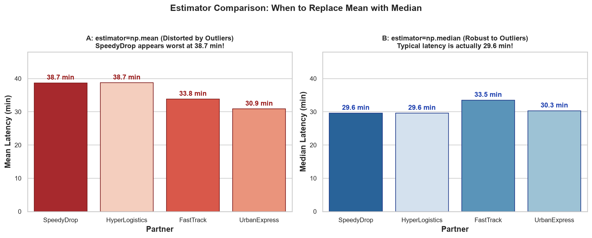
import seaborn as sns
import numpy as np
import matplotlib.pyplot as plt
# A. Using Mean (Default - Vulnerable to Outliers)
sns.barplot(data=df_deliv, x="partner", y="latency_minutes", estimator=np.mean)
# B. Using Median (Robust to Outliers)
sns.barplot(data=df_deliv, x="partner", y="latency_minutes", estimator=np.median)
# C. Using Sum (For Total Revenue or Total Tickets)
sns.barplot(data=df_ecom, x="category", y="order_amount", estimator=np.sum)Neeche dekhiye kaise sirf 6% extreme delay orders ne SpeedyDrop ke calculated average ko seedha 10.2 minutes artificially inflate kar diya:
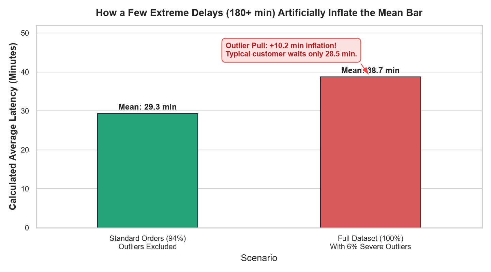
Data Science me sirf ek average number dikhana kafi nahi hota — ye batana bhi zaroori hota hai ki wo average kitna trustworthy hai. Seaborn 0.13+ me error bars ko control karne ke liye modern errorbar parameter use hota hai (purana ci parameter ab deprecated hai).
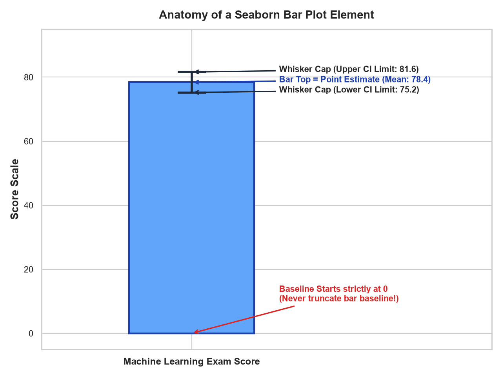
Seaborn 0.13+ chaar primary error bar modes offer karta hai:
| Syntax (Seaborn 0.13+) | Statistical Meaning | Best Used When... |
|---|---|---|
errorbar=('ci', 95) |
95% Confidence Interval: 95% certainty ke sath true population mean is range me hoga. | Sample data se general population conclusions nikalte waqt (Scientific & A/B testing). |
errorbar='sd' |
Standard Deviation: Actual data points mean ke aas-paas kitne bikhre hue (spread) hain. | Individual users ya observations ki variability dikhane ke liye. |
errorbar='se' |
Standard Error: Sample mean ki precision (Standard Deviation / √N). | Sample size bada ho aur mean estimation error compare karni ho. |
errorbar=None |
No Error Bar: Koi whisker draw nahi hoti, sirf solid bar height dikhti hai. | Jab data pehle se aggregated ho (e.g. Total Revenue, Exact Census counts). |
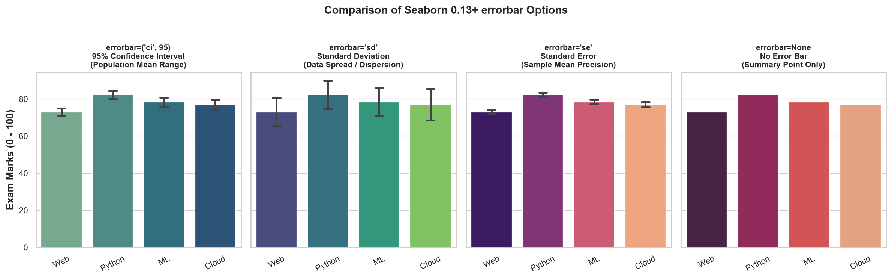
errorbar Modes — Notice how Standard Deviation ('sd') shows the widest whiskers reflecting individual student variations, while Standard Error ('se') is tightest.order & hue_order)Agar aap categories ko unke natural order me chod denge, to wo dataset me pehli baar jis order me aayi thin ya alphabetically sort hokar draw hongi. Isse visual hierarchy me clutter create hota hai — viewer ko highest aur lowest dhoondhne ke liye har bar ko dhyan se dekhna padta hai.
Hamesha categories ko metric ke value ke basis par sort karke present karein (High to Low ya Low to High). Isse viewer ka dimag 1 second ke andar ranking grasp kar leta hai!
import seaborn as sns
import matplotlib.pyplot as plt
import pandas as pd
df = pd.read_csv("scratch/seaborn_topic9_data/college_enrollment_marks.csv")
# Compute descending order dynamically using Pandas
sorted_courses = (
df.groupby("course")["exam_marks"]
.mean()
.sort_values(ascending=False)
.index
.tolist()
)
plt.figure(figsize=(8, 5))
sns.barplot(
data=df,
x="course",
y="exam_marks",
order=sorted_courses, # Passed sorted order!
palette="Blues_r"
)
plt.title("Course Performance Ranked High to Low")
plt.tight_layout()
plt.show()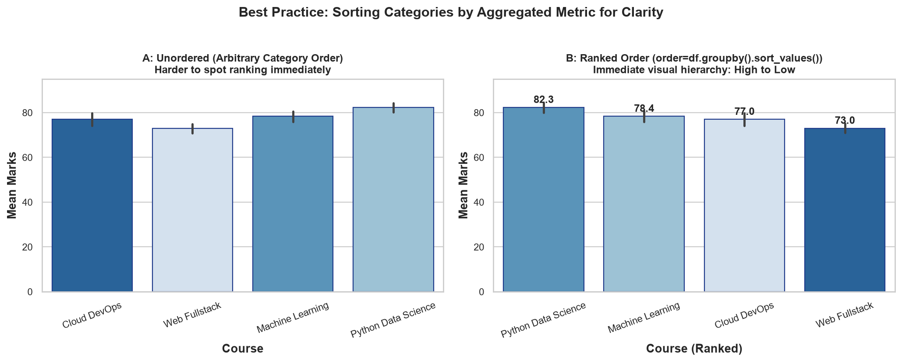
stat in Seaborn 0.13+)Business meetings me CEO ya Product Managers aksar puchte hain: "Clothing ka market share kitna percent hai?" Wo raw row count (205 orders) se zyada percentage (34.2%) me interested hote hain.
Seaborn 0.13+ se pehle percentages nikalne ke liye Pandas me custom calculation karni padti thi. Lekin ab Seaborn 0.13+ ne sns.countplot() ke andar powerful stat parameter introduce kar diya hai!
stat Value |
Display Metric | Formula / Calculation |
|---|---|---|
stat="count" (Default) |
Raw absolute frequency | Har category ki total rows (e.g. 205 orders) |
stat="percent" |
Normalized percentage (0% to 100%) | (Category Count / Total Rows) × 100 |
stat="proportion" |
Normalized share (0.0 to 1.0) | Category Count / Total Rows |
stat="probability" |
Empirical probability density | Discrete probability distribution sum = 1.0 |
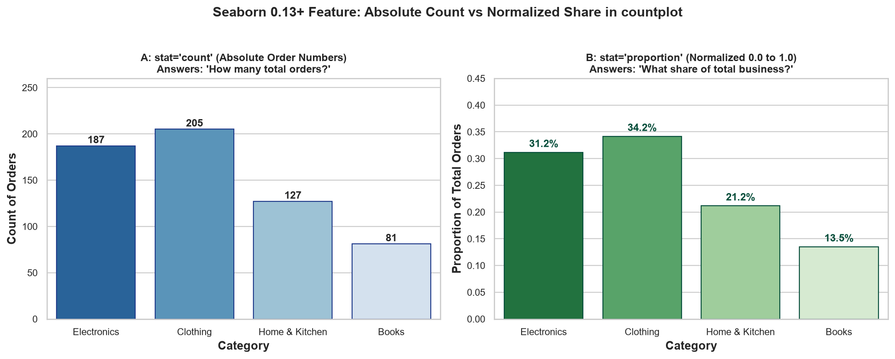
stat Parameter in Action — Panel A displays raw order counts (205, 187, 127, 81), whereas Panel B renders normalized proportions (34.2%, 31.2%, 21.2%, 13.5%).Jab hum stat="percent" ke sath hue="device" use karte hain, to multi-channel customer habits bilkul crystal clear ho jati hain:
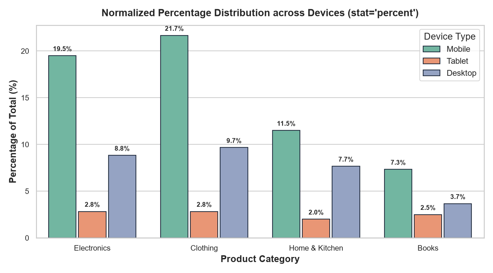
ax.patches & ax.bar_label)Jab kisi bar plot par data labels nahi hote, to reader ko bar ki height dekhkar y-axis par aankein dharani padti hain ki value 78 hai ya 80. Enterprise dashboards me Direct Data Labeling chart readability ko 10x improve kar deta hai.
Modern Matplotlib (3.4+) aur Seaborn me data labels lagane ke do approaches hain:
ax.bar_label() (Fastest & Cleanest)import seaborn as sns
import matplotlib.pyplot as plt
fig, ax = plt.subplots(figsize=(8, 5))
sns.barplot(data=df, x="course", y="exam_marks", ax=ax, palette="crest")
# Automatically labels all bar containers with 1 decimal formatting!
for container in ax.containers:
ax.bar_label(container, fmt="%.1f", padding=4, weight="bold")
plt.ylim(0, 100)
plt.show()ax.patches# Inside custom patch iteration:
for p in ax.patches:
height = p.get_height()
if height > 0:
ax.annotate(
f"Mean: {height:.1f}",
xy=(p.get_x() + p.get_width() / 2, height),
xytext=(0, 6),
textcoords="offset points",
ha="center",
va="bottom",
fontsize=10,
weight="bold",
color="#1E3A8A"
)Ek professional visualization aur ek amateur visualization me sabse bada farq aesthetic restraint ka hota hai. Beginners aksar har bar ko alag bright neon color de dete hain (jise "Rainbow Clutter" kehte hain), jisse viewer distract hota hai.
Agar aapke pass sirf 1 categorical variable hai (e.g., 4 courses), to 4 alag colors use karne ki zaroorat nahi hai jab tak ki color koi extra metric encode na kar raha ho. Ek single professional corporate blue (color="#2563EB") ya monochromatic palette (palette="Blues_r") use karna best practice hai.
Production-grade styling ke 3 golden rules:
sns.despine(top=True, right=True).edgecolor="#1E293B", linewidth=1.2 specify karein.Ek premier edtech university ke Academic Dean ne aapko data science student database analyze karne ko diya hai. Unka core objective hai: "Courses ki popularity aur unme student performance ke beech relation ko uncover karna."
Data me 4 engineering domains hain: Web Fullstack, Python Data Science, Machine Learning, aur Cloud DevOps.
| Course Domain | Total Students Enrolled | Mean Exam Marks | Median Exam Marks | Section A Mean | Section B Mean |
|---|---|---|---|---|---|
| Python Data Science | 45 | 82.32 | 82.2 | 83.18 | 81.49 |
| Machine Learning | 38 | 78.37 | 78.9 | 79.41 | 77.33 |
| Cloud DevOps | 35 | 76.99 | 76.0 | 78.84 | 75.25 |
| Web Fullstack | 52 | 73.01 | 74.5 | 74.42 | 71.60 |
Jab hum sns.countplot (Figure 9.2) aur sns.barplot (Figure 9.3) ko combine karte hain, to ek critical institutional insight samne aati hai:
Ek leading online retail marketplace me 600 orders analyze kiye gaye taaki marketing budget allocation optimize kiya ja sake across 4 categories (Clothing, Electronics, Home & Kitchen, Books) aur 3 devices (Mobile, Desktop, Tablet).
| Category | Order Count (N) | Volume Share (%) | Mean Order Value (INR) | Primary Ordering Channel |
|---|---|---|---|---|
| Clothing | 205 | 34.2% | ₹896.52 | Mobile (130 orders) |
| Electronics | 187 | 31.2% | ₹2602.27 | Mobile (117) & Desktop (53) |
| Home & Kitchen | 127 | 21.2% | ₹755.19 | Mobile (69 orders) |
| Books | 81 | 13.5% | ₹331.17 | Mobile (44 orders) |
Volume vs Revenue ka classic trade-off:
Operations engineering me count plots aur bar plots infrastructure bottlenecks identify karne ke primary monitoring tools hain.
Support team me 450 customer complaints ko categorize kiya gaya. Management ka traditional dhyan sirf ticket volume par rehta tha, lekin jab humne count plot aur resolution time bar plot ko side-by-side rakha, to sachai samne aayi:
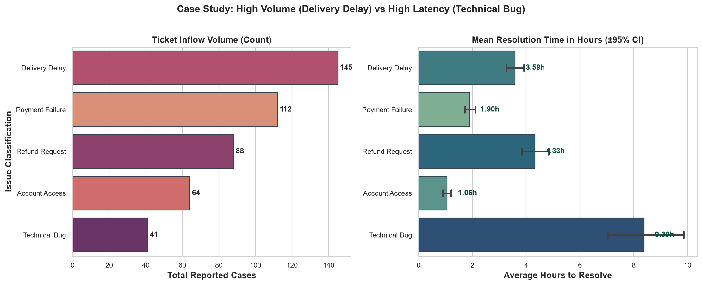
1,740 microservice API requests monitor kiye gaye across Peak Hours (rush traffic) aur Off-Peak Hours:
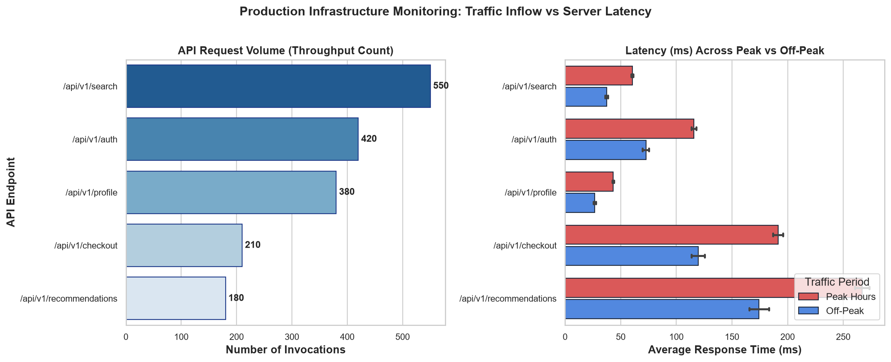
/api/v1/search handles the lion's share of throughput (550 requests). But Panel 2 reveals that /api/v1/recommendations exhibits severe latency spikes during Peak Hours (266.8 ms vs 174.3 ms off-peak), demanding immediate Redis caching!Bar plots aur count plots intuitive lagte hain, lekin unke galat istemal se data science reports me misleading aur deceptive graphs ban sakte hain. Neeche 12 critical pitfalls aur unke verified fixes diye gaye hain:
| # | Pitfall / Mistake | Dangerous Consequence | Professional Correction |
|---|---|---|---|
| 1 | Truncating the Bar Baseline (Non-zero axis) | Bars area-based visual perception par depend karti hain. Agar y-axis 70 se start karenge to 75 marks 72 marks se 3 guna bada lagega! | Bar plots ka measurement axis hamesha 0 se start hona chahiye (plt.ylim(0, ...)). Agar micro-differences dekhne hain to Point Plot use karein. |
| 2 | Passing Both x and y to sns.countplot |
Throws ValueError: Cannot pass values for both x and y. |
Count plot me sirf 1 variable pass karein. Frequency Seaborn internally compute karta hai. |
| 3 | Passing Continuous Floats to countplot |
Har float number (jaise 78.432, 78.435) apni alag bar bana leta hai — 500 ultra-thin bars ban jayengi! | Continuous numbers ke distribution ke liye sns.histplot() ya sns.kdeplot() use karein. |
| 4 | Ignoring Outliers with Default Mean | Extreme values bar height ko artificially kheench leti hain (jaise SpeedyDrop ka 38.7 min average). | Skewed distributions me robust summary ke liye estimator=np.median use karein. |
| 5 | Misinterpreting Error Bars as Data Range | Log sochte hain ki whiskers minimum aur maximum values hain. | Error bars 95% Confidence Interval (population mean range) ya Standard Deviation hoti hain. Caption me hamesha explain karein. |
| 6 | Vertical Bars with 15+ Categories | X-axis text aapas me overlap ho jata hai aur labels illegible ho jate hain. | Categories ko y-axis par pass karke Horizontal Layout banayein. |
| 7 | Rainbow Palette Clutter | Har category ko alag flashy color dena bina kisi logical meaning ke dimag ko strain karta hai. | Single category ke liye uniform brand color (color="#2563EB") ya gradient palette (palette="Blues_r") use karein. |
| 8 | Using Deprecated ci Parameter |
Seaborn 0.13+ me ci=95 deprecation warnings throw karta hai. |
Naye formal syntax use karein: errorbar=('ci', 95) ya errorbar='sd'. |
| 9 | Dodging Hue Bars without Gap | Sub-bars aapas me chipki rehti hain, jisse groups distinguish karna difficult hota hai. | Modern Seaborn feature use karein: gap=0.08. |
| 10 | Confusing Standard Error (SE) with Standard Deviation (SD) | SD individual points ka spread batata hai; SE sample mean ki statistical uncertainty batata hai. | Stakeholders ko clearly batayein ki error bar kis metric ko represent kar raha hai. |
| 11 | Showing Percentages without Sample Size (N) | "100% patients recovered" misleading hota hai agar total sample sirf 1 patient tha! | Chart title ya subtitle me hamesha sample size mention karein: (N = 600 orders). |
| 12 | Overplotting 3D / Shadowed Bar Effects | 3D bars viewing angle distortion introduce karti hain jisse bar ki true height read karna impossible ho jata hai. | Clean 2D flat visual design maintain karein with crisp borders (linewidth=1.2). |
Interview preparation aur day-to-day data science projects ke liye instant reference matrix:
| Task / Requirement | Seaborn 0.13+ One-Liner Recipe |
|---|---|
| Basic Frequency Count | sns.countplot(data=df, x="category") |
| Horizontal Count (Long Labels) | sns.countplot(data=df, y="category", order=df["category"].value_counts().index) |
| Percentage / Share Count | sns.countplot(data=df, x="category", stat="percent") |
| Average Metric by Category | sns.barplot(data=df, x="category", y="numeric_col", estimator=np.mean) |
| Robust Median for Outliers | sns.barplot(data=df, x="category", y="numeric_col", estimator=np.median) |
| Total Sum Aggregation | sns.barplot(data=df, x="category", y="revenue", estimator=np.sum) |
| 95% Confidence Interval with Caps | sns.barplot(data=df, x="cat", y="num", errorbar=("ci", 95), capsize=0.15) |
| Standard Deviation Error Bar | sns.barplot(data=df, x="cat", y="num", errorbar="sd") |
| Remove Error Bar (Solid Bar) | sns.barplot(data=df, x="cat", y="num", errorbar=None) |
| Grouped Bars with Modern Gap | sns.barplot(data=df, x="cat", y="num", hue="group", gap=0.08) |
| Ranked Sort by Value | order = df.groupby("cat")["num"].mean().sort_values(ascending=False).index |
| Direct Bar Labels (Matplotlib 3.4+) | for c in ax.containers: ax.bar_label(c, fmt="%.1f", padding=3) |
Apne concepts ko test karne ke liye in 21 practical interview-level exercises ko solve karein. Har question ke neeche interactive solution accordion diya gaya hai.
Answer: sns.countplot() sirf 1 categorical variable leta hai aur dataset me us category ke total rows (occurrences/frequency) ko count karta hai. Isme error bars nahi hote.
Dusri taraf, sns.barplot() 2 variables leta hai (1 categorical + 1 numerical) aur har group ke liye numerical metric (jaise Mean ya Median) compute karke uncertainty error bar ke sath draw karta hai.
Answer: Seaborn 0.13+ me errorbar=None specify kiya jata hai. Isse koi bhi vertical whisker line draw nahi hoti aur clean solid bar display hoti hai.
Answer: Categorical variable ko x ki jagah y parameter me pass karein: e.g. sns.countplot(data=df, y="category") ya sns.barplot(data=df, y="category", x="salary").
Answer: Arithmetic Mean (Average), jo estimator=np.mean ke barabar hota hai.
Answer: Bilkul nahi! Ye code ValueError: Cannot pass values for both x and y to countplot throw karega kyunki count plot row count khud measure karta hai.
Answer: Human visual perception bars ke total length aur area ke ratio ko evaluate karta hai. Agar baseline ko 0 ke bajaye 70 par truncate kar diya jaye, to 75 ki bar 72 ki bar se 300% badi dikhegi, jo severe visual distortion hai.
Answer: capsize parameter (e.g. capsize=0.15).
Answer: estimator=np.median use karna chahiye. Mean outliers se heavily sensitive hota hai aur artificially inflate ho jata hai, jabki Median 50th percentile represent karta hai aur outliers se robust rehta hai.
Answer: stat="percent" pass kiya jata hai. Agar 0.0 se 1.0 ke scale par share dekhna ho to stat="proportion" pass karte hain.
Answer: ('ci', 95) sample mean ki statistical uncertainty batata hai (95% confidence ki population mean is range me hai). Jabki 'sd' (Standard Deviation) actual individual observations ki data spread/variability ko darshata hai.
Answer: gap parameter (e.g. gap=0.08).
Answer: for container in ax.containers: ax.bar_label(container, fmt="%.1f", padding=3)
Answer: Pandas se order nikalte hain: custom_order = df.groupby("category")["metric"].mean().sort_values(ascending=False).index.tolist() aur phir order=custom_order pass karte hain.
Answer: Har category ko bina kisi reason ke flashy multi-color neon palette dena Rainbow Syndrome kehlata hai. Single categorical variable ke liye uniform color (color="#2563EB") ya single-hue gradient (palette="Blues_r") use karna chahiye.
Answer: Seaborn original sample data se replacement ke sath 1,000 bootstrap sub-samples generate karta hai (n_boot=1000). Har bootstrap sample ka mean nikalta hai, aur empirical distribution ke 2.5th aur 97.5th percentiles ko whiskers ke roop me draw karta hai.
Answer: sns.barplot(data=summary_df, x="Dept", y="Total_Expense", estimator=lambda x: x, errorbar=None) ya estimator=np.sum with errorbar=None use karein taaki redundant recalculation na ho.
Answer: Different `hue` levels side-by-side aane ke bajaye ek dusre ke upar overlay/stack ho jati hain. Isse transparent styling ke bina piche ki bars chup jati hain.
Answer: 50 bars chart par extreme cognitive load create karti hain. Aise case me Top 10 categories filter karke "Top 10 vs Others" dikhana chahiye, ya interactive table use karna chahiye.
Answer: Visual overlap ek strong indicator hai ki difference chance ke karan ho sakta hai, lekin formal confirmation ke liye hamesha Independent Two-Sample t-test ya Mann-Whitney U test (p-value < 0.05) calculate karna zaroori hota hai.
Answer: Default roop se percentage pure table ke Grand Total observations (N) par normalize hoti hai, jisse har sub-bar pure dataset ka share represent karti hai.
Answer: Bar plot tab use karein jab absolute magnitude aur area visual weight convey karna ho with zero baseline. Point plot tab use karein jab multiple categories ke across subtle slopes, trends, ya interaction effects (lines connecting dots) dekhne hon bina heavy solid blocks ke.
Project Scenario: Ek digital payment wallet company me 10,000 daily transactions monitor ho rahi hain across 5 payment channels (UPI, Credit Card, Debit Card, Net Banking, Wallet Balance). Data Science team ko ek single dashboard render karna hai jo do primary questions answer kare:
import seaborn as sns
import matplotlib.pyplot as plt
import pandas as pd
import numpy as np
# Set seed for reproducible synthetic dataset
np.random.seed(101)
channels = ["UPI", "Credit Card", "Debit Card", "Net Banking", "Wallet Balance"]
n_samples = 2500
df_fintech = pd.DataFrame({
"Channel": np.random.choice(channels, size=n_samples, p=[0.45, 0.22, 0.18, 0.08, 0.07]),
"Amount_INR": np.random.exponential(scale=1200, size=n_samples) + 50,
"Status": np.random.choice(["Legit", "Flagged_Fraud"], size=n_samples, p=[0.96, 0.04])
})
# Filter only fraud incidents for risk severity analysis
df_fraud = df_fintech[df_fintech["Status"] == "Flagged_Fraud"]
fig, (ax1, ax2) = plt.subplots(1, 2, figsize=(14, 5.5), dpi=160)
# Panel 1: Throughput Volume (countplot)
sns.countplot(
data=df_fintech,
x="Channel",
order=channels,
palette="Blues_r",
ax=ax1,
edgecolor="#1E3A8A"
)
ax1.set_title("1. Transaction Inflow Volume by Channel", weight="bold")
ax1.set_ylabel("Total Transactions (N)")
for c in ax1.containers:
ax1.bar_label(c, weight="bold", padding=3)
# Panel 2: Financial Severity (barplot with 95% CI)
sns.barplot(
data=df_fraud,
x="Channel",
y="Amount_INR",
order=channels,
palette="Reds_r",
errorbar=("ci", 95),
capsize=0.15,
ax=ax2,
edgecolor="#7F1D1D"
)
ax2.set_title("2. Mean Fraud Exposure per Incident (INR ±95% CI)", weight="bold")
ax2.set_ylabel("Mean Fraud Loss (₹)")
fig.suptitle("FinTech Payment Infrastructure & Fraud Risk Dashboard", fontsize=15, weight="bold", y=1.02)
plt.tight_layout()
plt.show()Topic 9 me humne Seaborn ke do core workhorses — sns.countplot() aur sns.barplot() — ko complete statistical depth aur practical engineering rigor ke sath master kiya hai.
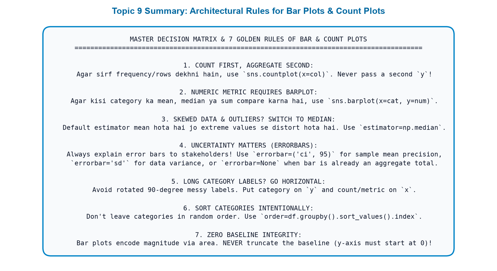
Agle topic me hum seekhenge Point Plots (sns.pointplot()): Jab aapko multiple categories ke across interactions aur changes compare karne hon bina solid heavy bars ke, to kaise dots aur connecting lines statistical comparison ko lightweight aur powerful banati hain!